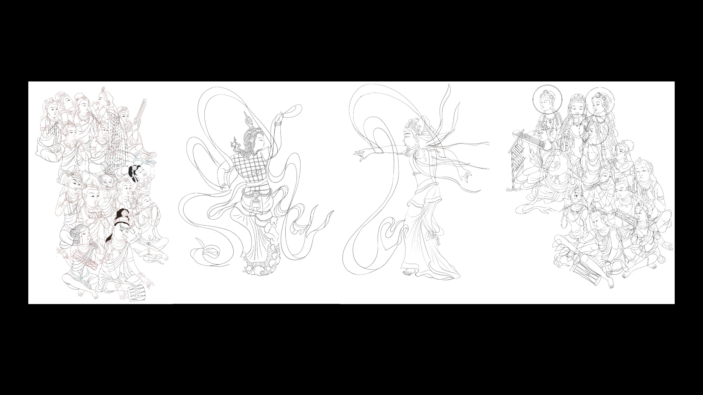
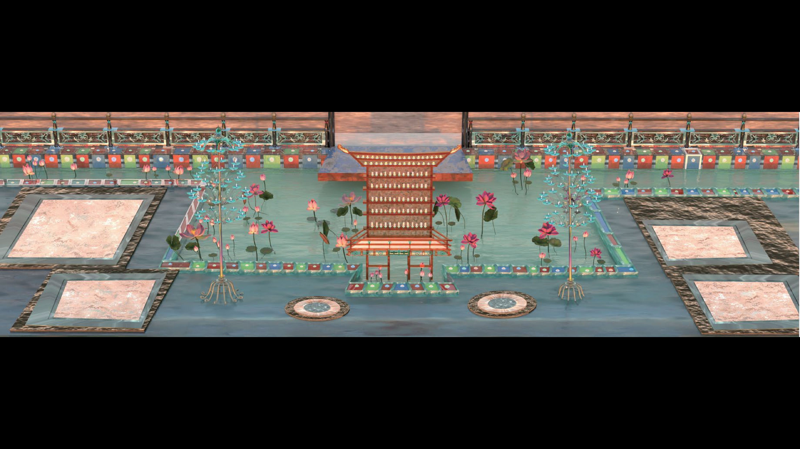
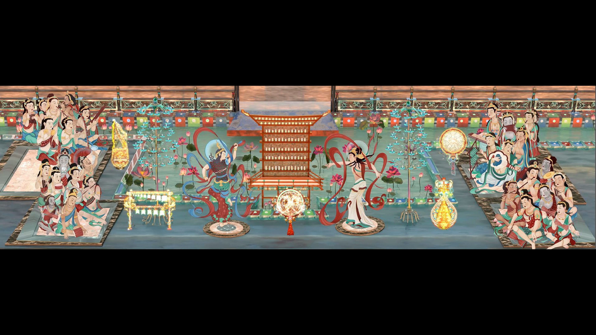
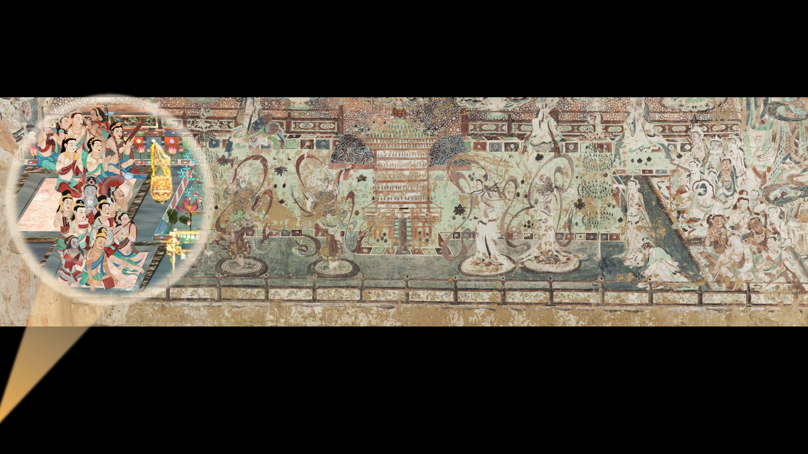
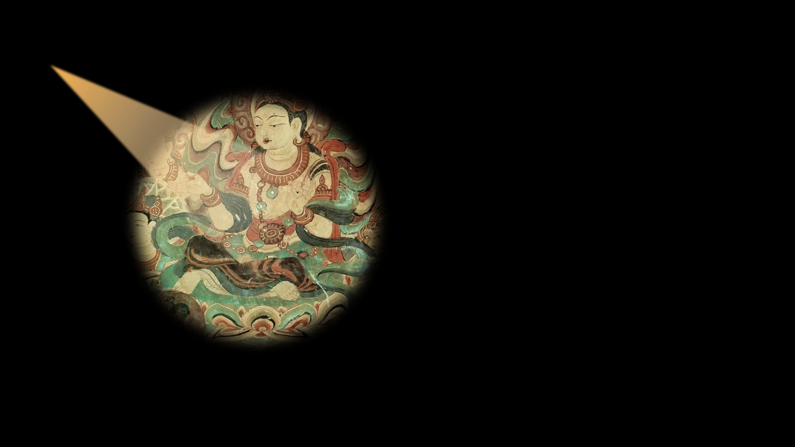
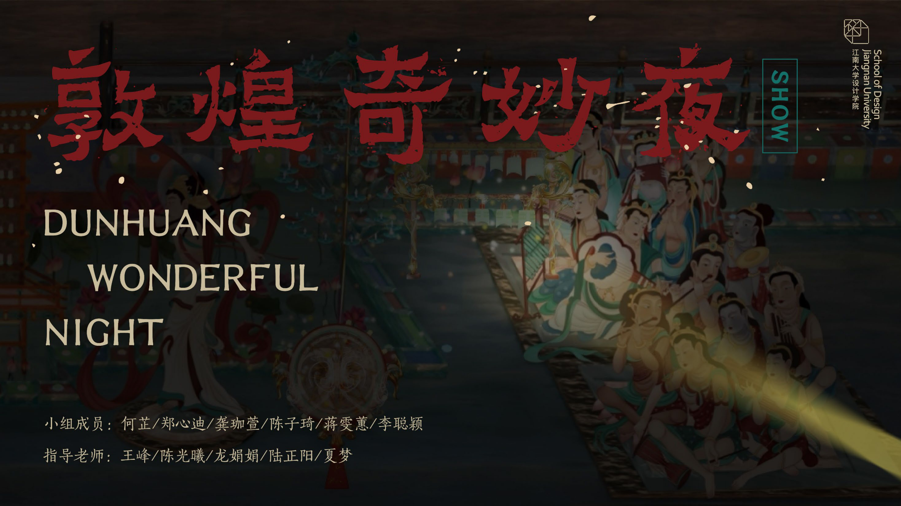

Interactive installation
Dunhuang Fantasy Night
Exploring projected murals with light.
This installation turns imagery from Dunhuang murals into a spatial interaction. Visitors explore a projected scene with a handheld infrared light; tracked input activates visual elements and sound.
- Project scope
- Spatial interaction and installation prototyping
- Methods & tools
- TouchDesigner · Blender · Projection mapping · Infrared tracking

A physical way to explore an image
The handheld light connects a visitor's gesture with a location in the projected scene. Tracking, projected animation and sound form a single interaction, allowing the installation to be explored rather than watched as a fixed sequence.
Building the installation
The development combined visual assets, TouchDesigner interaction logic, tracking and physical construction. The documentation below includes the visual development and installation setup.
Project documentation
{kind=link}

{kind=link}

{kind=link}

{kind=link}

{kind=link}

{kind=link}
